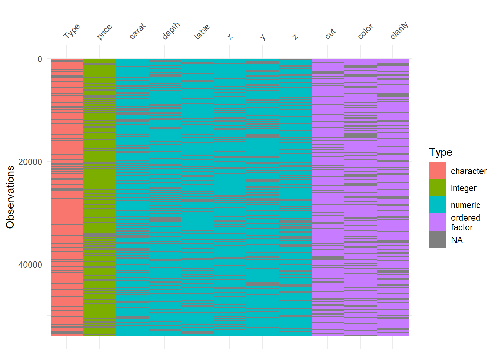
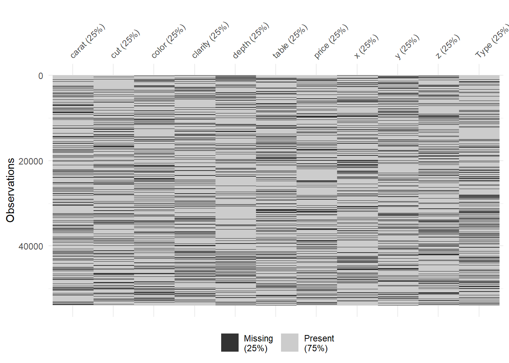

Chapter 4 Descriptive - Primelinary Analysis
4.1 Motivation
- To make sure data cleaning step is automatized and consistent.
- To make sure data contains relevant variable before analysis.
- To make sure there are no unexpected variable type issues.
- Detect any missing values, especially in numeric columns to understand if it should be NA or 0.
- Control and compare different users` values for specific variables.
- Calculate must-have indicators such as LCSI and RCSI.
- Make data TIDY… Such as: multiple selection questions are in dummy variables and binary now.
4.2 Column Renaming
If there is an error on this part, check error details. Following issues might be in-place;
- Duplication on column names
- Removal of some columns from the original data
Basically, if the following code and imported data sets column names does not match, this error is inevitable.
For solution steps:
- Check error message, find out which columns have error.
- Correct the chunk of coding below by accurate names.
#Code example; I am using rename function but there might be better ones for sure.
#Lets keep using diamonds data for this as well.
#rename comes with dplyr.
DiamondsRenamed <- diamonds %>% rename("renamed_table"="table")
colnames(diamonds)## [1] "carat" "cut" "color" "clarity" "depth" "table" "price" "x" "y" "z" "Type"colnames(DiamondsRenamed)## [1] "carat" "cut" "color" "clarity" "depth" "renamed_table" "price"
## [8] "x" "y" "z" "Type"4.3 Converting Multiple Selections into Dummy Variables
This issue happens with ODK or Device Magic, as they put multiple selections into one variable. KOBO does this dummy coding it self, which is amazing. It can consume a bit of time, let me introduce you how I manage this bothering situation… If you have a better way to do it, let me know!
#Lets add a column to diamonds to work with
#We added multiple selections divided by comma
DiamondsRenamed$MultSelec <- "Selection1,Selection2,Selection5"#Take this column as data frame
df_multselec <- as.data.frame(DiamondsRenamed$MultSelec)
#Rename this column
colnames(df_multselec)<- "examplecolumn"
#We will use cSplit_e function within splitstackshape package
library(splitstackshape)
#Now you have these columns as dummy ones, if it is selected it goes as 1 otherwise as 0.
#Each category becomes a column.
df_multselec_seperated <- cSplit_e(df_multselec, split.col = "examplecolumn",
sep = ",", type = "character", mode = "binary", fixed = TRUE, fill = 0)
#Remove original column before merging with original data, so that you will not have duplicate columns.
df_multselec_seperated$examplecolumn <- NULL
#With column bind, add new dummy columns into original data. Done.
DiamondsRenamed <- cbind(DiamondsRenamed,df_multselec_seperated)
#Lets see what happened. Check last three columns as examplecolumn.
glimpse(DiamondsRenamed)## Rows: 53,940
## Columns: 15
## $ carat <dbl> 0.23, 0.21, 0.23, 0.29, 0.31, 0.24, 0.24, 0.26, 0.22, 0.23, 0.30, 0.23, 0.22, 0.3…
## $ cut <ord> Ideal, Premium, Good, Premium, Good, Very Good, Very Good, Very Good, Fair, Very …
## $ color <ord> E, E, E, I, J, J, I, H, E, H, J, J, F, J, E, E, I, J, J, J, I, E, H, J, J, G, I, …
## $ clarity <ord> SI2, SI1, VS1, VS2, SI2, VVS2, VVS1, SI1, VS2, VS1, SI1, VS1, SI1, SI2, SI2, I1, …
## $ depth <dbl> 61.5, 59.8, 56.9, 62.4, 63.3, 62.8, 62.3, 61.9, 65.1, 59.4, 64.0, 62.8, 60.4, 62.…
## $ renamed_table <dbl> 55, 61, 65, 58, 58, 57, 57, 55, 61, 61, 55, 56, 61, 54, 62, 58, 54, 54, 56, 59, 5…
## $ price <int> 326, 326, 327, 334, 335, 336, 336, 337, 337, 338, 339, 340, 342, 344, 345, 345, 3…
## $ x <dbl> 3.95, 3.89, 4.05, 4.20, 4.34, 3.94, 3.95, 4.07, 3.87, 4.00, 4.25, 3.93, 3.88, 4.3…
## $ y <dbl> 3.98, 3.84, 4.07, 4.23, 4.35, 3.96, 3.98, 4.11, 3.78, 4.05, 4.28, 3.90, 3.84, 4.3…
## $ z <dbl> 2.43, 2.31, 2.31, 2.63, 2.75, 2.48, 2.47, 2.53, 2.49, 2.39, 2.73, 2.46, 2.33, 2.7…
## $ Type <chr> "Population", "Population", "Population", "Population", "Population", "Population…
## $ MultSelec <chr> "Selection1,Selection2,Selection5", "Selection1,Selection2,Selection5", "Selectio…
## $ examplecolumn_Selection1 <dbl> 1, 1, 1, 1, 1, 1, 1, 1, 1, 1, 1, 1, 1, 1, 1, 1, 1, 1, 1, 1, 1, 1, 1, 1, 1, 1, 1, …
## $ examplecolumn_Selection2 <dbl> 1, 1, 1, 1, 1, 1, 1, 1, 1, 1, 1, 1, 1, 1, 1, 1, 1, 1, 1, 1, 1, 1, 1, 1, 1, 1, 1, …
## $ examplecolumn_Selection5 <dbl> 1, 1, 1, 1, 1, 1, 1, 1, 1, 1, 1, 1, 1, 1, 1, 1, 1, 1, 1, 1, 1, 1, 1, 1, 1, 1, 1, …4.4 Missing Values
4.4.1 Defining Missing Values of Dataframe
Usually we do not have missing values, if questionnaire design tailored well in Kobo or ODK. Conditional or mandatory questions can be defined during this phase. Still, checking missing data makes sense. for cross checks. Data cleaning step should be held with whoever design KOBO-ODK forms.
#Required packages are visdat and naniar.
library(visdat)
library(naniar)
#Lets see if diamonds data have some missing values here and there.
vis_dat(diamonds)No missing values in diamonds data. One of the amazing thing of this visual is it gives you types and structures of the each variable. This thing sure is an art! Amazing! Lets remove some values and see that amazing visual again.
#Required packages for adding random NAs to data is missMethods.
library(missMethods)
#With delete_MCAR function, we delete random values to 25% of the data and make them NA.
diamonds_missing <- delete_MCAR(diamonds, p = 0.25)
vis_dat(diamonds_missing)
So now, grey lines in the visual reflects NAs. Amazing! Lets check the percentage of missings now:
#Percentage of missing by variable.
vis_miss(diamonds_missing)
Amazing. delete_MCAR function is king. You can see %25 missing randomly from each column. To have a better knowledge about these operations please visit: https://cran.r-project.org/web/packages/naniar/vignettes/getting-started-w-naniar.html
4.4.2 Imputation of Missing Values
There are several methods for imputation such as median-mean imputations or one can go all in and use some regressions even. Most of the cases, for some numeric values, you need to replace NAs with zeros in humanitarian data. So lets say, questionnaire designer linked two questions; do you have income?-Yes or no question ; if yes, how much? If the answer is NO, then how much question is not appearing in data, means that this value will be NA. On the other hand, for analysis purposes, you need to embed zero to those values. Happens a lot! Let me show you how I handle this in R (also adding few useful codes that I use during data cleaning);
#Lets do this operation for only numeric columns of diamnonds data.
#setnafill comes with data.table package. Mapping numeric columns map_lgl comes with purrr package.
library(purrr)
library(data.table)
diamonds_missing[ , purrr::map_lgl(diamonds_missing, is.numeric)]## # A tibble: 53,940 × 7
## carat depth table price x y z
## <dbl> <dbl> <dbl> <int> <dbl> <dbl> <dbl>
## 1 NA 61.5 55 326 NA 3.98 2.43
## 2 0.21 NA 61 326 3.89 3.84 2.31
## 3 0.23 NA 65 327 4.05 4.07 NA
## 4 0.29 62.4 58 334 4.2 4.23 2.63
## 5 0.31 63.3 58 NA NA 4.35 2.75
## 6 NA 62.8 57 336 NA 3.96 2.48
## 7 NA 62.3 NA 336 3.95 3.98 2.47
## 8 0.26 NA 55 337 4.07 4.11 NA
## 9 0.22 65.1 61 337 3.87 3.78 2.49
## 10 0.23 59.4 61 338 4 4.05 2.39
## # … with 53,930 more rowssetnafill(diamonds_missing[ , purrr::map_lgl(diamonds_missing, is.numeric)], fill=0)
vis_miss(diamonds_missing)
Now, we do not have any missing values for numeric columns as they are converted to (filled with) zeros. Job well done! setnafill is a great piece of function that you can use, please do check it further.
Some useful coding lines;
#This piece of code shows you how to select columns starts with etc.
#Not related with this concept but I will add those here, very useful piece of code.
#CashUsageReplace <- colnames(x1 %>% dplyr::select(ends_with("_cash",ignore.case = TRUE)))
#EcmenReplace <- colnames(x1 %>% dplyr::select(starts_with("ecmen_",ignore.case = TRUE)))
#Also, if you want to delete variables, lets say which has missing values greater than %80 of their records, you can use a piece of code given below.
#x2 <- x1[colSums(is.na(x1))/nrow(x1) < .8]